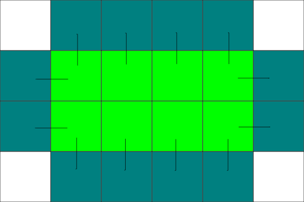
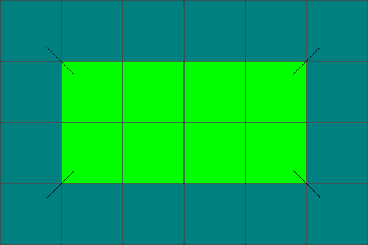

Lapse rates
lapse_rates.RmdLapse rates calculation
From Wang (2016) Climate North America
The algorithms then retrieve monthly climate data and elevation values for a location from the corresponding grid cell plus eight surrounding cells. The climate and elevation values of the nine cells are used to calculate differences in a climate variable and in elevation between all 36 possible pairs. A simple linear regression of the differences in the climate variable on the difference in elevation is then established, and the slope of the regression is used as the empirical lapse rate for each climate variable at each specific location. As the local regressions are dynamically developed along with locations of inquiry, we call this downscaling method a “dynamic local downscaling” approach. To avoid over-adjustments due to a weak linear relationship, each lapse rate was weighted by the R-square value of the local linear regression.
The way this is done in this package, we precompute lapse rates for each 36 variables and store them with the associated normal.
Computation details
Starting with equal extent digital elevation model raster (x) and 36 climate variables rasters (pre delta method y’s).
We first convert rasters to matrices as this is way easier to handle for this type of operation.
From there, since we want to compute everything in one swell swoop, we create border extended matrices to handle lapse rates values at the edge of a raster.
Starting with sides

Then corners

Next step is to sample the extended matrices 8 times and compute the differences with the original matrices. This is going to give us a stack of 8 matrices for each 36 variables that will be used to compute the linear regression coefficients.

Regresssion coefficients are computed using the following methods and the R² adjustment applied.
#' Simple linear regression without the intercept term
#' beta_coef = sum(xy) / sum(x²)
#' mss = sum(x * beta_coef)², sum of squared fitted values
#' rss = sum(ε²), sum of squared (y minus fitted), sum of absolute errors
#' R² = mss / (mss + rss)
#' Lapse rate = beta_coef * R²Here is an example using two starting matrices
(dem <- matrix(sample(0:1000, 25), nrow = 5))
#> [,1] [,2] [,3] [,4] [,5]
#> [1,] 172 869 200 846 426
#> [2,] 406 878 196 76 61
#> [3,] 459 558 516 897 554
#> [4,] 62 926 766 445 772
#> [5,] 484 451 535 566 468
(tmax <- matrix(30 - (dem / 50) %/% 1, nrow = 5))
#> [,1] [,2] [,3] [,4] [,5]
#> [1,] 27 13 26 14 22
#> [2,] 22 13 27 29 29
#> [3,] 21 19 20 13 19
#> [4,] 29 12 15 22 15
#> [5,] 21 21 20 19 21Start by extending matrices
dem_ext <- climr:::recycle_borders(dem, 5, 5)
#> climr version 0.1.0 includes an overhaul of the naming conventions for variables, functions, parameters, and options. Call `data(name_changes)` for a table specifying the correspondence between old and new names. If you have used a previous version of climr you MUST call `cache_clear()` before using this one.
(tmax_ext <- climr:::recycle_borders(tmax, 5, 5))
#> [,1] [,2] [,3] [,4] [,5] [,6] [,7]
#> [1,] 27 27 13 26 14 22 22
#> [2,] 27 27 13 26 14 22 22
#> [3,] 22 22 13 27 29 29 29
#> [4,] 21 21 19 20 13 19 19
#> [5,] 29 29 12 15 22 15 15
#> [6,] 21 21 21 20 19 21 21
#> [7,] 21 21 21 20 19 21 21Sample 8 times
dem_d <- climr:::deltas(dem_ext, 5, 5)
(tmax_d <- climr:::deltas(tmax_ext, 5, 5))
#> $northwest
#> [,1] [,2] [,3] [,4] [,5]
#> [1,] 0 14 -13 12 -8
#> [2,] 5 14 -14 -3 -15
#> [3,] 1 3 -7 14 10
#> [4,] -8 9 4 -2 -2
#> [5,] 8 8 -8 -4 1
#>
#> $north
#> [,1] [,2] [,3] [,4] [,5]
#> [1,] 0 0 0 0 0
#> [2,] 5 0 -1 -15 -7
#> [3,] 1 -6 7 16 10
#> [4,] -8 7 5 -9 4
#> [5,] 8 -9 -5 3 -6
#>
#> $northeast
#> [,1] [,2] [,3] [,4] [,5]
#> [1,] -14 13 -12 8 0
#> [2,] -9 13 -13 -7 -7
#> [3,] -8 8 9 16 10
#> [4,] -10 8 -2 -3 4
#> [5,] -9 -6 2 -4 -6
#>
#> $east
#> [,1] [,2] [,3] [,4] [,5]
#> [1,] -14 13 -12 8 0
#> [2,] -9 14 2 0 0
#> [3,] -2 1 -7 6 0
#> [4,] -17 3 7 -7 0
#> [5,] 0 -1 -1 2 0
#>
#> $southeast
#> [,1] [,2] [,3] [,4] [,5]
#> [1,] -14 14 3 15 7
#> [2,] -3 7 -14 -10 -10
#> [3,] -9 -4 2 2 -4
#> [4,] -8 8 4 -1 6
#> [5,] 0 -1 -1 2 0
#>
#> $south
#> [,1] [,2] [,3] [,4] [,5]
#> [1,] -5 0 1 15 7
#> [2,] -1 6 -7 -16 -10
#> [3,] 8 -7 -5 9 -4
#> [4,] -8 9 5 -3 6
#> [5,] 0 0 0 0 0
#>
#> $southwest
#> [,1] [,2] [,3] [,4] [,5]
#> [1,] -5 9 -13 13 7
#> [2,] -1 8 -8 -9 -16
#> [3,] 8 10 -8 2 3
#> [4,] -8 9 6 -2 4
#> [5,] 0 0 1 1 -2
#>
#> $west
#> [,1] [,2] [,3] [,4] [,5]
#> [1,] 0 14 -13 12 -8
#> [2,] 0 9 -14 -2 0
#> [3,] 0 2 -1 7 -6
#> [4,] 0 17 -3 -7 7
#> [5,] 0 0 1 1 -2Now compute relevant coefficients
# Number of surrounding cells
n <- length(dem_d)
# Sums of x squared
sum_xx <- climr:::sum_matrix(
climr:::sup(dem_d, 2)
)
beta_coef <- climr:::sum_matrix(
climr:::prod_matrix(dem_d, tmax_d)
) / sum_xx
# We need the fitted values to compute the
# coefficient of determination
f <- climr:::fitted(dem_d, beta_coef)
# We use the same approach as stats::summary.lm
# applied to a list matrices
mss <- climr:::sum_matrix(
climr:::sup(f, 2)
)
rss <- climr:::sum_matrix(
climr:::sup(
climr:::delta_matrix(tmax_d, f),
2
)
)
# We can combine the resulting matrices to get the
# coefficient of determination and multiply by beta coficient
(lapse_rate <- beta_coef * mss / (mss + rss))
#> [,1] [,2] [,3] [,4] [,5]
#> [1,] -0.02008744 -0.01991429 -0.01905148 -0.01914296 -0.01924584
#> [2,] -0.01963220 -0.01959146 -0.02044560 -0.01978590 -0.01938747
#> [3,] -0.01960868 -0.01996766 -0.01982820 -0.01927210 -0.01988396
#> [4,] -0.01974567 -0.01959050 -0.01996064 -0.02104873 -0.01960000
#> [5,] -0.01927916 -0.01898502 -0.02007731 -0.02041018 -0.01978681